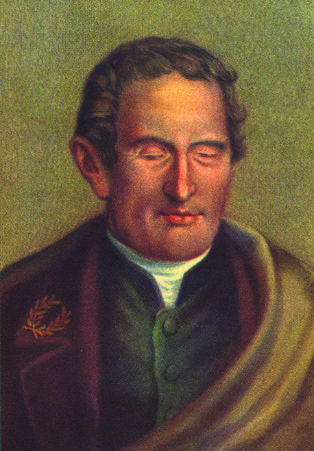

Код Брайля: Наука чтения кончиками пальцев
История о том, как 15-летний французский подросток решил инженерную задачу, изменившую жизнь миллионов людей во всём мире.
Проблема, которую не могли решить веками
До изобретения Брайля слепые люди пытались читать гигантские книги с выдавленными обычными буквами. Одна страница весила как кирпич, а на чтение одного предложения уходило несколько минут. Читать было мучительно трудно, а писать самим — невозможно.

Путь изобретателя: От мастерской до Пантеона
Луи не родился учёным — он был обычным любознательным мальчиком, столкнувшимся с тяжёлым испытанием.
Детство в Кувре и роковая случайность
Отец Луи был шорником (шил конскую упряжь). Играя в мастерской с острым шилом, 3-летний Луи случайно поранил глаз. Началось воспаление, и к 5 годам мальчик полностью ослеп.
Королевский институт для слепых детей в Париже
Луи выигрывает стипендию. В школе всего 14 громоздких рельефных книг на всю библиотеку. Луи мечтает свободно читать историю, науку и ноты.
Встреча с «ночной азбукой» капитана Барбье
В школу приезжает офицер Шарль Барбье. Он создал шифр из 12 выпуклых точек, чтобы солдаты читали донесения в темноте без огня. Система была слишком сложной, но Луи ухватился за эту идею!
Рождение 6-точечной системы Брайля
Луи сократил ячейку ровно до 6 точек. Теперь символ целиком помещался под подушечку пальца. Слепые люди впервые смогли не только быстро читать, но и писать прибором и грифелем.
Инженерный секрет: Почему именно 6 точек?
Военный шифр из 12 точек провалился, а 6 точек Брайля покорили мир. В чём был научный расчёт подростка?
Подушечка пальца человека
Биология доказала: человек способен мгновенно распознать осязанием матрицу размером не более 6 точек без перемещения пальца. 12 точек Барбье требовали ощупывания сверху вниз, и мозг терял скорость восприятия.
Логичная нумерация
Точки считаются сверху вниз: левый столбик — 1, 2, 3; правый столбик — 4, 5, 6. Например, буква «Б» — это точки 1 и 2.
Универсальность для всех языков
Система оказалась настолько элегантной, что на неё переложили русский, английский, китайский языки, химические формулы и шахматные партии.
Как общаться с незрячим человеком: Без мифов и жалости
Незрячие люди живут полной жизнью, учатся, работают программистами, переводчиками и музыкантами. Главное правило — уважение и естественность.
✕ Как делать НЕ нужно (Частые ошибки)
-
✕
Не хватай внезапно за руку или трость. Это пугает и сбивает ориентир в пространстве.
-
✕
Не проявляй чрезмерную жалость. Не нужно причитать: «Ой, бедный, какое горе». Относись как к обычному человеку.
-
✕
Не бойся обычных слов «посмотри» или «увидимся». Незрячие спокойно используют их в своей речи каждый день.
-
✕
Не гладь собаку-поводыря на службе. Собака в специальной шлейке работает и отвечает за безопасность хозяина.
✓ Золотые правила уважительного общения
-
✓
Назови себя голосом при встрече. «Привет, я Денис из 4-го "Б"». Человек узнает, кто рядом.
-
✓
Всегда спроси, нужна ли помощь. «Вам помочь перейти улицу?» И только если человек согласился — предложи локоть.
-
✓
Предупреждай, если уходишь. Не оставляй человека разговаривающим в пустоту. Просто скажи: «Я отойду на минутку».
-
✓
Описывай направление словами. Вместо «Вон там!» скажи: «Справа от вас в двух шагах дверь».
Практикум: Собери букву шрифта Брайля
Попробуй себя в роли наборщика книг. Посмотри на образец и собери верную комбинацию точек.
Тактильный декодер: Преврати любое слово в шрифт Брайля
Напечатай слово или имя — и система мгновенно закодирует его в матрицу рельефных точек по официальному ГОСТу русского шрифта Брайля.
Инженерный квиз: Битва эрудитов 4 класса
Проверим, насколько внимательно класс слушал факты. Выбирайте один верный ответ!
Главный вывод: Знания открывают мир каждому
Подвиг Луи Брайля доказывает: упорство, наука и сочувствие к другим способны победить любые препятствия.
Возраст не помеха
Луи Брайль создал фундаментальное изобретение человечества в 15 лет — всего на 5 лет старше учеников 4 класса.
Научный расчёт
Гениальность шрифта — не в случайности, а в глубоком понимании возможностей человеческого осязания (матрица 2×3).
Равные возможности
Сегодня шрифт Брайля есть на лекарствах, в лифтах, на вокзалах и в умных тактильных дисплеях компьютеров.
Все ученики закрывают глаза на 30 секунд и слушают окружающие звуки школы.
С закрытыми глазами достать из пенала ручку, ластик или линейку только пальцами.
Почувствовать, насколько чувствительны пальцы, когда зрение выключено.